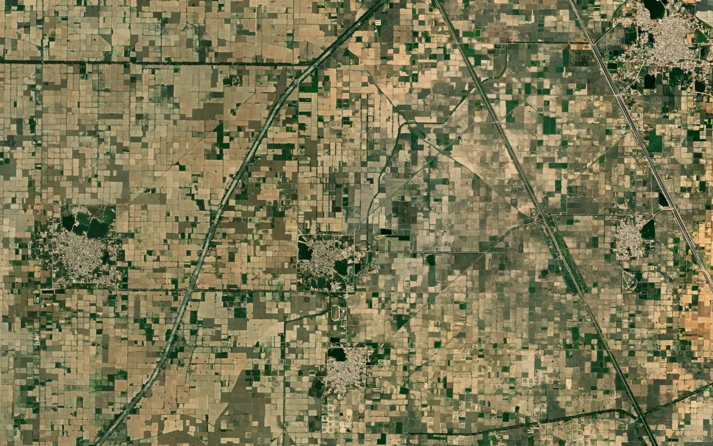

Haryana murabba and killa map: how to read the village map with the Jamabandi

Most Haryana villages were laid out during consolidation of holdings into a grid of large squares called rectangles, known locally as murabba or mustatil. Each rectangle is divided into smaller fields called killas. So a piece of land in Haryana is usually written as rectangle number and killa number, for example 24//7 or 24/7, where 24 is the rectangle and 7 is the killa. This guide explains how to read that grid, how it connects to the Jamabandi, and what to do when you need the land on a satellite image or in a GIS file.
1. Where the map comes from
Haryana village maps (the shajra or musavi) are kept by the Revenue Department, with revenue work running through the district, the tehsil or sub-tehsil and the village, where the patwari keeps the local records. The Jamabandi and the village maps can be seen through the state's land-record services such as Jamabandi Haryana and the state's Bhu-Naksha service. These are official state services and the right place to start.
2. The rectangle and killa grid
- Rectangle (murabba / mustatil): a large numbered square of the consolidation grid, traditionally 25 killas in a 5 x 5 layout.
- Killa: one field of the rectangle, numbered 1 to 25 inside it; a standard killa is about one acre.
- Killa parts: a killa divided later is written with a part, such as 7/1 and 7/2, or with a min (part) note.
- Khasra numbers: land outside the regular grid, such as the abadi (settled area), roads, ponds and irregular edges, keeps ordinary khasra numbers.
3. Reading the village map
On the map, the rectangle grid is easy to see: straight lines in two directions, a rectangle number in each big square and killa numbers in the small fields. Roads, watercourses and the village abadi break the grid, and the edges of the village are usually irregular. Because the grid is so regular, a single wrong killa number is easy to spot by checking the numbers around it: killa 7 should sit between 6 and 8 in its row.
4. Linking the map to the Jamabandi
The Jamabandi is the record of rights, revised every five years. It is arranged by khewat (the holding of a group of owners) and khatoni (the cultivators within it), and against each it lists the rectangle and killa numbers with their area. Take the rectangle and killa numbers from the map, choose the same district, tehsil and village, and find them in the Jamabandi. Changes after a sale, inheritance or partition are recorded through mutation (intkal), so read the latest Jamabandi together with later mutations.
5. Kanal and marla
Haryana records give area in kanal and marla. 20 marla make 1 kanal and 8 kanal make 1 acre, so one kanal is about 506 square metres and one marla is about 25 square metres. A full killa of 8 kanal is about one acre, about 0.405 hectare. Always convert from the recorded value and state the conversion in any land schedule.
6. Government and common land
Haryana villages have shamlat deh (village common land) and other land held by the panchayat or the state, such as roads, ponds and land for public use. These entries show in the ownership column of the Jamabandi, so the map alone cannot tell you which killas are common land. Read the current record and take advice from a revenue professional before relying on it. Our guide on checking government land in a village covers the wider method.
7. Why a viewer map is not yet a GIS map
A map on a portal is good for finding a killa, but it is not a file you can open with GPS points or a project layout. For that, the map must be georeferenced, meaning fitted to real coordinates such as WGS 84 latitude / longitude or UTM metres, and every killa and khasra digitized as a closed polygon carrying its number. The result should be checked on satellite imagery: in Haryana the killa lines often match field bunds and tracks very closely, which makes the check reliable across the whole village.
8. Common uses
- Seeing a killa on a satellite image in Google Earth
- Listing the rectangles and killas inside a proposed solar, warehouse or industrial site
- Listing the killas crossed by a road, pipeline or transmission line route
- Preparing a killa-wise land schedule with village, area and land type
9. Limits to keep in mind
The map shows the record as drawn. Later killa divisions and new roads may not appear on it, and neighbouring village maps do not always agree exactly along their shared edge. A digitized map is a planning base, not proof of title. The revenue record remains the legal source, and where a line decides ownership or compensation, a DGPS or Total Station survey on the ground is the next step.
10. What we deliver
We turn the Haryana village map into a georeferenced GIS file: every killa and khasra as a numbered polygon, checked against satellite imagery, with the village boundary inside the same files, in KML for Google Earth, DWG / DXF for AutoCAD, SHP for QGIS or ArcGIS and an Excel list of plots and areas. BHU-NETRA Map Service is a private service and is not connected with any state government.
See the Haryana khasra map page, check your village with the village checker, read how to measure area on a Bhu-Naksha map and land-record terms of each state, or ask for a quotation.
Need khasra maps or a survey?
Georeferenced and digitized khasra maps in KML, DWG, SHP and Excel for 20 states, plus DGPS, Total Station, topographic and drone surveys. Single village orders welcome.